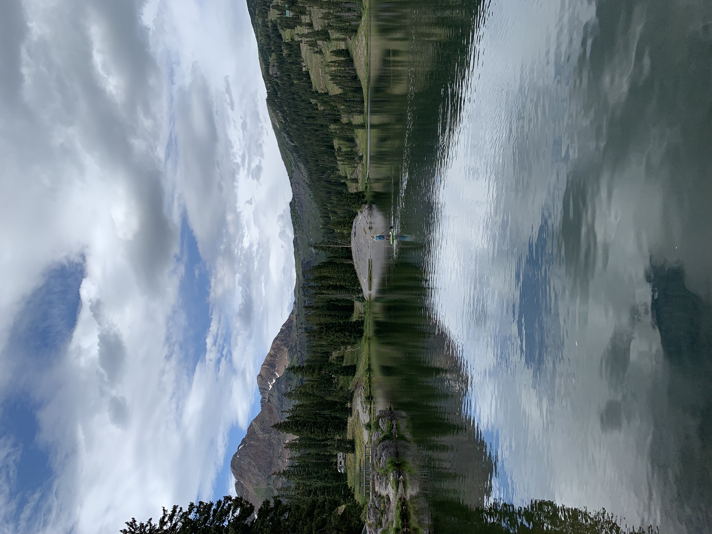

Hi, I am Marc Pinero
I am a software developer, living in Dallas, Texas.
I currently work as the Store Scan Specialist at Whole Foods, where I deal with the marketing signs and tags for my store.
About Me
I am mechanically minded, and I love to think of creative ways to build something from the ground up. Over the years I have learned to be a team player, and collaborate with others on projects. I am excited for my journey becoming a software devloper. With clear communication, thinking outside of the box, and being a team player. I believe I will be a great addition to any software development team.
Outside of coding, you can catch me being out in nature, and staying active. In my spare time I love playing racquetball, skate boarding, playing the guitar, and reading about deep philisophical problems.

Contact Marc
Feel free to conact me with the following options: